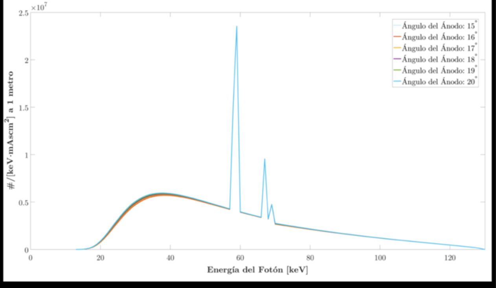

Rayos X de bremsstrahlung (continuos) (frenado): Se producen cuando los electrones acelerados son desviados por el campo eléctrico del núcleo del ánodo. Los electrones pueden perder parte de su energía cinética, emitiendo fotones de rayos X de energía variable (desde casi 0 hasta un valor máximo).Este es el espectro continuo.
Rayos X característicos: Aparecen como picos en valores específicos de energía. Se originan cuando un electrón incidente expulsa un electrón de las capas internas del átomo del ánodo (por ejemplo, capa K). Cuando otro electrón cae a llenar ese hueco, se emite un fotón de energía muy bien definida.
